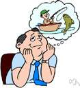
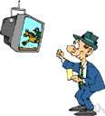

play
Also found in: Thesaurus, Medical, Legal, Financial, Acronyms, Idioms, Encyclopedia, Wikipedia.
play
(plā)v. played, play·ing, plays
v.intr.
1. To occupy oneself in an activity for amusement or recreation: children playing with toys.
2.
a. To take part in a sport or game: He's just a beginner and doesn't play well.
b. To participate in betting; gamble.
3.
a. To behave in a teasing or joking manner; act in jest or sport: She's not angry with you; she's just playing.
b. To deal or behave carelessly or indifferently, especially for one's own amusement; toy: She isn't interested in you; she's just playing with you.
4. To act or conduct oneself in a specified way: play fair; an investor who plays cautiously.
5. To act, especially in a dramatic production.
6. Music
a. To perform on an instrument: play on an accordion.
b. To emit sound or be sounded in performance: The band is playing.
7. To be performed, as in a theater or on television: A good movie is playing tonight.
8. To be received or accepted: a speech that played poorly with the voters.
9. To move or seem to move quickly, lightly, or irregularly: The breeze played on the water.
10. To function or discharge uninterruptedly: The fountains played in the courtyard.
11. To move or operate freely within a bounded space, as machine parts do.
v.tr.
1.
a. To engage in (a game or sport): play hockey; play chess.
b. To compete against in a game or sport: We play the Tigers today.
c. To compete in a game or sport at (a location): The New York Yankees played Fenway Park last night.
d. To occupy or work at (a position) in a game: Lou Gehrig played first base.
e. To put (a player) at a position in a sport or in a game: Let's play her at first base.
f. To use or move (a card or piece) in a game: play the ace of clubs
g. To hit (a ball, shot, or stroke), as in tennis: played a strong backhand.
h. To attempt to keep or gain possession or control of: No foul was called because he was playing the ball.
2.
a. To perform or act (a role or part) in a dramatic performance.
b. To assume the role of; act as: played the peacemaker at the meeting.
c. To pretend to be; mimic the activities of: played cowboy; played the star.
3.
a. To perform (a theatrical work or part of a work): The actors played the scene with great skill.
b. To present a theatrical performance or other entertainment in (a given place): The company played Boston last week.
4.
a. To bet; wager: played ten dollars on the horse.
b. To make bets on: play the races.
5.
a. To perform or put into effect, especially as a jest or deception: play a joke on a friend.
b. To handle; manage: played the matter quietly.
c. To use or manipulate, especially for one's own interests: played his opponents against each other.
6. Music
a. To perform on (an instrument): play the guitar.
b. To perform (a piece) on instruments or an instrument.
7. To cause (a movie, audiotape, or other recording) to be presented in audible or visible form.
8. To discharge or direct in a certain direction: played the water on the burning roof.
9. To cause to move rapidly, lightly, or irregularly: play lights over the dance floor.
10. To exhaust (a hooked fish) by allowing it to pull on the line.
n.
Phrasal Verbs: 1.
a. A literary work written for performance on the stage; a drama.
b. The performance of such a work.
2. Activity engaged in for enjoyment or recreation.
3. Fun or jesting: It was all done in play.
4.
a. The act or manner of engaging in a game or sport: After a time-out, play resumed. The golf tournament featured expert play.
b. The act or manner of using a card, piece, or ball in a game or sport: my partner's play of the last trump; his clumsy play of the rebound.
c. A move or an action in a game: It's your play. The runner was thrown out in a close play.
5. Participation in betting; gambling.
6. Manner of dealing with others; conduct: fair play.
7. An attempt to obtain something; a bid: a play for sympathy.
8.
a. Action, motion, or use: the play of the imagination.
b. Freedom or occasion for action; scope: give full play to an artist's talents.
9. Movement or space for movement, as of mechanical parts.
10. Quick, often irregular movement or action, especially of light or color: the play of color on iridescent feathers.
11. A control mechanism on an audio or video player that starts or resumes the audible or visual presentation of a recording.
12. A geological deposit, as of oil or natural gas, considered as a prospect for commercial extraction.
play along Informal
To cooperate or pretend to cooperate: decided to play along with the robbers for a while.
play around
To philander.
play at
1. To participate in; engage in.
2. To do or take part in halfheartedly.
play back
To replay (a recently recorded tape, for example).
play down
To minimize the importance of; make little of: played down the defect to protect the troops' morale.
play off
1. Sports
a. To establish the winner of (a tie) by playing in an additional game or series of games.
b. To participate in a playoff.
2. To set (one individual or party) in opposition to another so as to advance one's own interests: a parent who played off one child against another.
play on (or upon)
To take advantage of (another's attitudes or feelings) for one's own interests: demagogues who play on popular fears.
play out
To use up; exhaust: Our strength was played out early in the contest.
play up
Idioms: To emphasize or publicize: She played up her experience during the job interview.
in play
1. Sports In a position to be legally or feasibly played: The ball is now in play.
2. In a position, or rumored to be in a position of possible corporate takeover: The company's stock rose in price when it was said to be in play.
out of play Sports
Not in a position to be legally or feasibly played.
play ball Slang
To cooperate: The opposing attorneys refused to play ball with us.
play both ends against the middle
To set opposing parties or interests against one another so as to advance one's own goals.
play fast and loose
To behave in a recklessly irresponsible or deceitful manner: played fast and loose with the facts.
play for time
To use delaying tactics; temporize.
play games Slang
To be evasive or deceptive: Quit playing games and tell me what you want.
play hard to get
To pretend to be uninterested in a romantic relationship.
play in Peoria Slang
To be acceptable to average constituents or consumers.
play into (someone's) hands
To act or behave so as to give an advantage to an opponent.
play it by ear
To act according to the circumstances; improvise: I don't have a set schedule, so we'll have to play it by ear.
play (one's) cards Informal
To use the resources or strategies at one's disposal: played her cards right and got promoted.
play possum
To pretend to be sleeping or dead.
play the field
To date more than one person at the same time.
play the game Informal
To behave according to the accepted customs or standards.
play up to
To curry favor with.
play with a full deck Slang
To be of sound mind: didn't seem to be playing with a full deck.
play with fire
To take part in a dangerous or risky undertaking.
play with (oneself) Vulgar Slang
To masturbate.
play′a·bil′i·ty n.
play′a·ble adj.
American Heritage® Dictionary of the English Language, Fifth Edition. Copyright © 2016 by Houghton Mifflin Harcourt Publishing Company. Published by Houghton Mifflin Harcourt Publishing Company. All rights reserved.
play
(pleɪ)vb
1. to occupy oneself in (a sport or diversion); amuse oneself in (a game)
2. (General Sporting Terms) (tr) to contend against (an opponent) in a sport or game: Ed played Tony at chess and lost.
3. (General Sporting Terms) to fulfil or cause to fulfil (a particular role) in a team game: he plays defence; he plays in the defence.
4. (General Sporting Terms) (tr) to address oneself to (a ball) in a game: play the ball not the man.
5. (intr; often foll by about or around) to behave carelessly, esp in a way that is unconsciously cruel or hurtful; trifle or dally (with): to play about with a young girl's affections.
6. (Film) (when: intr, often foll by at) to perform or act the part (of) in or as in a dramatic production; assume or simulate the role (of): to play the villain; just what are you playing at?.
7. (Film) to act out or perform (a dramatic production)
8. (Theatre) to give a performance in (a place) or (of a performance) to be given in a place
9. (intr) to be received: How will these policies play in Middle England?.
10. (Music, other) to have the ability to perform on (a musical instrument): David plays the harp.
11. (Music, other) to perform (on a musical instrument) as specified: he plays out of tune.
12. (Music, other) (tr)
a. to reproduce (a tune, melody, piece of music, note, etc) on an instrument
b. to perform works by (a specific composer): to play Brahms.
13. to discharge or cause to discharge: he played the water from the hose onto the garden.
14. to operate, esp to cause (a record player, radio, etc) to emit sound or (of a record player, radio, etc) to emit (sound): he played a record; the radio was playing loudly.
15. to move or cause to move freely, quickly, or irregularly: lights played on the scenery.
16. (Stock Exchange) (tr) stock exchange to speculate or operate aggressively for gain in (a market)
17. (Angling) (tr) angling to attempt to tire (a hooked fish) by alternately letting out and reeling in line and by using the rod's flexibility
18. to put (a card, counter, piece, etc) into play
19. (Gambling, except Cards) to gamble (money) on a game
20. play ball informal to cooperate
21. play fair play fair with someone to prove oneself fair in one's dealings
22. play false play fair with someone to prove oneself unfair in one's dealings
24. play for time to delay the outcome of some activity so as to gain time to one's own advantage
25. play into the hands of to act directly to the advantage of (an opponent)
n
28. (Theatre) a dramatic composition written for performance by actors on a stage, on television, etc; drama
29. (Theatre)
a. the performance of a dramatic composition
b. (in combination): playreader.
30.
a. games, exercise, or other activity undertaken for pleasure, diversion, etc, esp by children
b. (in combination): playroom.
c. (as modifier): play area.
31. manner of action, conduct, or playing: fair play.
32. the playing or conduct of a game or the period during which a game is in progress: rain stopped play.
33. (General Sporting Terms) US and Canadian a move or manoeuvre in a game: a brilliant play.
34. (General Sporting Terms) the situation of a ball that is within the defined area and being played according to the rules (in the phrases in play, out of play)
35. a turn to play: it's my play.
36. (Gambling, except Cards) the act of playing for stakes; gambling
37. action, activity, or operation: the play of the imagination.
38. freedom of or scope or space for movement: too much play in the rope.
39. light, free, or rapidly shifting motion: the play of light on the water.
40. fun, jest, or joking: I only did it in play.
41. call into play to bring into operation
42. make a play for informal
a. to make an obvious attempt to gain
b. to attempt to attract or seduce
[Old English plega (n), plegan (vb); related to Middle Dutch pleyen]
ˌplayaˈbility n
ˈplayable adj
Collins English Dictionary – Complete and Unabridged, 12th Edition 2014 © HarperCollins Publishers 1991, 1994, 1998, 2000, 2003, 2006, 2007, 2009, 2011, 2014
play
(pleɪ)n.
1. a dramatic composition; drama.
2. a dramatic performance, as on the stage.
3. activity, often spontaneous, engaged in for recreation, as by children.
4. fun or jest, as opposed to earnest: I said it merely in play.
5. a pun.
6. the action or conduct of a game: the fourth inning of play.
7. an act or instance of playing: a play that cost us the match.
8. manner or style of playing.
9. one's turn to play.
10. a playing for stakes; gambling.
11. an often crafty maneuver: a takeover play.
12. an enterprise; venture.
13. action of a specified kind: foul play.
14. action, activity, or operation: the play of fancy.
15. brisk, light, or changing movement or action: the play of a fountain.
16. elusive change: the play of a searchlight against the night sky.
17. a space in which something, as a part of a mechanism, can move.
18. freedom of movement within a space.
19. freedom or scope for activity: full play of the mind.
20. attention; coverage: The scandal got a big play in the papers.
21. an act or instance of being broadcast.
v.t. 22. to portray; enact: to play Macbeth.
23. to perform (a drama, pantomime, etc.).
24. to act the part or character of in real life: to play the fool; to play God.
25. to act or sustain (a part): Economics played a part in the decision.
26. to give performances in: to play the big cities.
27. to engage in (a game, pastime, etc.).
28. to contend against in a game.
29. to perform in (a specified position or role) in a game or competition: to play center field.
30. to employ in a game: I played my highest card.
31. to use as if in playing a game, esp. for one's own advantage: He played his brothers against each other.
32. to stake or wager, as in a game.
33. to lay a wager or wagers on (something).
34. to represent or imitate, as for recreation: to play cowboys and Indians.
35. to perform or be able to perform on (a musical instrument).
36. to perform (music) on an instrument.
37. to perform the music of (a composer).
38. to cause to produce sound or pictures: played the VCR.
39. to perform or carry out, esp. as a sly or deceitful action: to play tricks.
40. to put into operation; act upon: to play a hunch.
41. to cause to move or change lightly or quickly: to play lights on a fountain.
42. to operate or cause to operate, esp. continuously or with repeated action: to play a hose on a fire.
43. to allow (a hooked fish) to exhaust itself by pulling on the line.
44. to display or feature (a news story, photograph, etc.), esp. prominently: Play the flood photos on page one.
45. to exploit or trade in: to play the stock market.
v.i. 46. to occupy oneself in diversion, amusement, or recreation.
47. to do something that is not to be taken seriously; sport.
48. to amuse oneself; toy; trifle (often fol. by with).
49. to take part in a game.
50. to take part in a game for stakes; gamble.
51. to conduct oneself or act in a specified way: to play fair.
52. to act on or as if on the stage; perform.
53. to perform on a musical instrument.
54. (of an instrument or music) to sound in performance.
55. to give forth sound: The radio played all night.
56. to be performed or shown: What's playing at the theater?
57. to be capable of or suitable for performance, as a dramatic script.
58. to be received; go over: How will the proposal play with the public?
59. to move freely within a space, as a part of a mechanism.
60. to move about lightly, quickly, or irregularly: A smile played about her lips.
61. to operate continuously or with repeated action.
62. to comply; cooperate.
63. play along,
a. to cooperate or concur.
b. to pretend to cooperate or concur.
64. play around,
a. to behave in a playful or frivolous manner.
b. to have promiscuous or adulterous sexual relations.
65. play at,
a. to pretend to do or be.
b. to do without seriousness.
66. play down, to treat as of little importance; minimize.
67. play off,
a. to play an extra game or round in order to settle a tie.
b. to set (one person or thing) against another, usu. for one's own gain or advantage.
68. play on or upon, to exploit the weaknesses of; take advantage of: played on his generosity.
69. play up, to emphasize the importance of; highlight or publicize.
70. play up to, to attempt to please or impress in order to gain the favor of.
Idioms: 1. bring into play, to cause to be introduced, considered, or used.
2. make a play for, to employ stratagems to attract or gain.
3. play both ends against the middle, to maneuver opposing groups in order to benefit oneself.
4. play fast and loose with, to behave cavalierly toward; deal irresponsibly with.
5. play for time, to forestall an event or decision.
6. play into the hands of, to act in such a way as to give an advantage to (someone, esp. an opponent). Also, play into (someone's) hands.
7. play one's cards right or well, to maneuver skillfully.
8. play the field, to date a number of persons during the same period of time.
9. play with a full deck, Slang. to be sane (used esp. in the negative).
10. play with oneself, to masturbate.
[before 900; (n.) Middle English pleye, Old English plega; (v.) Middle English pleyen, Old English pleg(i)an, c. Middle Dutch pleien to leap for joy, dance, rejoice)]
Random House Kernerman Webster's College Dictionary, © 2010 K Dictionaries Ltd. Copyright 2005, 1997, 1991 by Random House, Inc. All rights reserved.
play
1. children's games
When children play, they spend time amusing themselves with toys or taking part in games.
The kids went off to play in the park.
2. sports and games
If you play a sport or game, you take part in it regularly.
Raja and I play tennis at least once a week.
Do you play chess?
If someone plays in a game, match, or competition, they take part in it on a particular occasion.
He hopes to play in England's match against France next week.
3. CDs and DVDs
If you play something such as a CD or DVD, you put it in a piece of equipment and listen to it.
She played me a tape of the interview.
She plays her CDs too loudly.
Don't say that someone 'plays' a film or a television programme. Say that they show it.
The teacher showed us a film about tigers.
Many news programmes showed the clip.
4. musical instruments
If you play a musical instrument, you produce music from it.
There is a piano in the hall, but nobody ever plays it.
If you want to say that someone is able to play a particular instrument, you can use play with or without the. For example, you say 'She plays the piano' or 'She plays piano'.
Uncle Rudi played the cello.
He wanted to learn to play guitar.
Collins COBUILD English Usage © HarperCollins Publishers 1992, 2004, 2011, 2012
play
Past participle: played
Gerund: playing
| Imperative |
|---|
| play |
| play |
Collins English Verb Tables © HarperCollins Publishers 2011
ThesaurusAntonymsRelated WordsSynonymsLegend:
Switch to new thesaurus
| Noun | 1. |  play - a dramatic work intended for performance by actors on a stage; "he wrote several plays but only one was produced on Broadway" play - a dramatic work intended for performance by actors on a stage; "he wrote several plays but only one was produced on Broadway"dramatic composition, dramatic work - a play for performance on the stage or television or in a movie etc. theater of the absurd - plays stressing the irrational or illogical aspects of life, usually to show that modern life is pointless; "Samuel Beckett and Eugene Ionesco have written plays for the theater of the absurd" morality play - an allegorical play popular in the 15th and 16th centuries; characters personified virtues and vices |
| 2. | play - a theatrical performance of a drama; "the play lasted two hours" show - a social event involving a public performance or entertainment; "they wanted to see some of the shows on Broadway" musical, musical comedy, musical theater - a play or film whose action and dialogue is interspersed with singing and dancing | |
| 3. | play - a preset plan of action in team sports; "the coach drew up the plays for her team" power play - (ice hockey) a play in which one team has a numerical advantage over the other as a result of penalties; "the team was unable to capitalize on the power play" razmataz, razzle, razzle-dazzle, razzmatazz - any exciting and complex play intended to confuse (dazzle) the opponent | |
| 4. | play - a deliberate coordinated movement requiring dexterity and skill; "he made a great maneuver"; "the runner was out on a play by the shortstop" movement, move, motion - the act of changing location from one place to another; "police controlled the motion of the crowd"; "the movement of people from the farms to the cities"; "his move put him directly in my path" takeaway - the act of taking the ball or puck away from the team on the offense (as by the interception of a pass) figure - a predetermined set of movements in dancing or skating; "she made the best score on compulsory figures" icing the puck, icing - (ice hockey) the act of shooting the puck from within your own defensive area the length of the rink beyond the opponent's goal stroke, shot - (sports) the act of swinging or striking at a ball with a club or racket or bat or cue or hand; "it took two strokes to get out of the bunker"; "a good shot requires good balance and tempo"; "he left me an almost impossible shot" blitz, linebacker blitzing, safety blitz - (American football) defensive players try to break through the offensive line | |
| 5. | play - a state in which action is feasible; "the ball was still in play"; "insiders said the company's stock was in play" activeness, activity, action - the state of being active; "his sphere of activity"; "he is out of action" | |
| 6. | play - utilization or exercise; "the play of the imagination" usage, use, utilisation, utilization, exercise, employment - the act of using; "he warned against the use of narcotic drugs"; "skilled in the utilization of computers" | |
| 7. | play - an attempt to get something; "they made a futile play for power"; "he made a bid to gain attention" | |
| 8. | play - activity by children that is guided more by imagination than by fixed rules; "Freud believed in the utility of play to a small child" diversion, recreation - an activity that diverts or amuses or stimulates; "scuba diving is provided as a diversion for tourists"; "for recreation he wrote poetry and solved crossword puzzles"; "drug abuse is often regarded as a form of recreation" house - play in which children take the roles of father or mother or children and pretend to interact like adults; "the children were playing house" doctor - children take the roles of physician or patient or nurse and pretend they are at the physician's office; "the children explored each other's bodies by playing the game of doctor" | |
| 9. | play - (in games or plays or other performances) the time during which play proceeds; "rain stopped play in the 4th inning" quantity, measure, amount - how much there is or how many there are of something that you can quantify half - one of two divisions into which some games or performances are divided: the two divisions are separated by an interval quarter - (football, professional basketball) one of four divisions into which some games are divided; "both teams scored in the first quarter" over - (cricket) the division of play during which six balls are bowled at the batsman by one player from the other team from the same end of the pitch | |
| 10. | play - the removal of constraints; "he gave free rein to his impulses"; "they gave full play to the artist's talent" freedom - the condition of being free; the power to act or speak or think without externally imposed restraints | |
| 11. | play - a weak and tremulous light; "the shimmer of colors on iridescent feathers"; "the play of light on the water" alteration, change, modification - an event that occurs when something passes from one state or phase to another; "the change was intended to increase sales"; "this storm is certainly a change for the worse"; "the neighborhood had undergone few modifications since his last visit years ago" | |
| 12. | play - verbal wit or mockery (often at another's expense but not to be taken seriously); "he became a figure of fun"; "he said it in sport" humor, wit, witticism, wittiness, humour - a message whose ingenuity or verbal skill or incongruity has the power to evoke laughter paronomasia, pun, punning, wordplay - a humorous play on words; "I do it for the pun of it"; "his constant punning irritated her" | |
| 13. | play - movement or space for movement; "there was too much play in the steering wheel" wiggliness - a jerky back and forth kind of mobility; "he walked with the wiggliness of a child on high heels" | |
| 14. | play - gay or light-hearted recreational activity for diversion or amusement; "it was all done in play"; "their frolic in the surf threatened to become ugly" diversion, recreation - an activity that diverts or amuses or stimulates; "scuba diving is provided as a diversion for tourists"; "for recreation he wrote poetry and solved crossword puzzles"; "drug abuse is often regarded as a form of recreation" coquetry, flirtation, flirting, toying, dalliance, flirt - playful behavior intended to arouse sexual interest game - frivolous or trifling behavior; "for actors, memorizing lines is no game"; "for him, life is all fun and games" | |
| 15. | play - (game) the activity of doing something in an agreed succession; "it is my turn"; "it is still my play" starting, start - a turn to be a starter (in a game at the beginning); "he got his start because one of the regular pitchers was in the hospital"; "his starting meant that the coach thought he was one of their best linemen" attack - an offensive move in a sport or game; "they won the game with a 10-hit attack in the 9th inning" down - (American football) a complete play to advance the football; "you have four downs to gain ten yards" at-bat, bat - (baseball) a turn trying to get a hit; "he was at bat when it happened"; "he got four hits in four at-bats" trick - (card games) in a single round, the sequence of cards played by all the players; the high card is the winner | |
| 16. | play - the act of playing for stakes in the hope of winning (including the payment of a price for a chance to win a prize); "his gambling cost him a fortune"; "there was heavy play at the blackjack table" diversion, recreation - an activity that diverts or amuses or stimulates; "scuba diving is provided as a diversion for tourists"; "for recreation he wrote poetry and solved crossword puzzles"; "drug abuse is often regarded as a form of recreation" throw - casting an object in order to determine an outcome randomly; "he risked his fortune on a throw of the dice" | |
| 17. | play - the act using a sword (or other weapon) vigorously and skillfully action - something done (usually as opposed to something said); "there were stories of murders and other unnatural actions" fencing - the art or sport of fighting with swords (especially the use of foils or epees or sabres to score points under a set of rules) | |
| Verb | 1. | play - participate in games or sport; "We played hockey all afternoon"; "play cards"; "Pele played for the Brazilian teams in many important matches" develop - move one's pieces into strategically more advantageous positions; "Spassky developed quickly" unblock - play the cards of (a suit) so that the last trick on which a hand can follow suit will be taken by a higher card in the hand of a partner who has the remaining cards of a combined holding encounter, take on, meet, play - contend against an opponent in a sport, game, or battle; "Princeton plays Yale this weekend"; "Charlie likes to play Mary" play out - play to a finish; "We have got to play this game out, even thought it is clear that we have last" play out - play to a finish; "We have got to play this game out, even thought it is clear that we have last" |
| 2. | play - act or have an effect in a specified way or with a specific effect or outcome; "This factor played only a minor part in his decision"; "This development played into her hands"; "I played no role in your dismissal" | |
| 3. | play - play on an instrument; "The band played all night long" music - an artistic form of auditory communication incorporating instrumental or vocal tones in a structured and continuous manner perform - give a performance (of something); "Horowitz is performing at Carnegie Hall tonight"; "We performed a popular Gilbert and Sullivan opera" spiel, play - replay (as a melody); "Play it again, Sam"; "She played the third movement very beautifully" play - perform music on (a musical instrument); "He plays the flute"; "Can you play on this old recorder?" play along, accompany, follow - perform an accompaniment to; "The orchestra could barely follow the frequent pitch changes of the soprano" busk - play music in a public place and solicit money for it; "three young men were busking in the plaza" | |
| 4. | play - play a role or part; "Gielgud played Hamlet"; "She wants to act Lady Macbeth, but she is too young for the role"; "She played the servant to her husband's master" act as, act, play - pretend to have certain qualities or state of mind; "He acted the idiot"; "She plays deaf when the news are bad" make believe, pretend, make - represent fictitiously, as in a play, or pretend to be or act like; "She makes like an actress" playact, roleplay, act, play - perform on a stage or theater; "She acts in this play"; "He acted in `Julius Caesar'"; "I played in `A Christmas Carol'" support - play a subordinate role to (another performer); "Olivier supported Gielgud beautifully in the second act" play - pretend to be somebody in the framework of a game or playful activity; "Let's play like I am mommy"; "Play cowboy and Indians" act out, enact, reenact - act out; represent or perform as if in a play; "She reenacted what had happened earlier that day" act out - represent an incident, state, or emotion by action, especially on stage; "She could act neurotic anxiety" impersonate, portray - assume or act the character of; "She impersonates Madonna"; "The actor portrays an elderly, lonely man" | |
| 5. | play - be at play; be engaged in playful activity; amuse oneself in a way characteristic of children; "The kids were playing outside all day"; "I used to play with trucks as a little girl" fool around, horse around, arse around, fool - indulge in horseplay; "Enough horsing around--let's get back to work!"; "The bored children were fooling about" frisk, frolic, gambol, lark, lark about, rollick, romp, run around, skylark, cavort, disport, sport - play boisterously; "The children frolicked in the garden"; "the gamboling lambs in the meadows"; "The toddlers romped in the playroom" | |
| 6. | play - replay (as a melody); "Play it again, Sam"; "She played the third movement very beautifully" | |
| 7. | play - perform music on (a musical instrument); "He plays the flute"; "Can you play on this old recorder?" music - an artistic form of auditory communication incorporating instrumental or vocal tones in a structured and continuous manner | |
| 8. | play - pretend to have certain qualities or state of mind; "He acted the idiot"; "She plays deaf when the news are bad" | |
| 9. | play - move or seem to move quickly, lightly, or irregularly; "The spotlights played on the politicians" go, locomote, move, travel - change location; move, travel, or proceed, also metaphorically; "How fast does your new car go?"; "We travelled from Rome to Naples by bus"; "The policemen went from door to door looking for the suspect"; "The soldiers moved towards the city in an attempt to take it before night fell"; "news travelled fast" | |
| 10. | play - bet or wager (money); "He played $20 on the new horse"; "She plays the races" | |
| 11. | play - engage in recreational activities rather than work; occupy oneself in a diversion; "On weekends I play"; "The students all recreate alike" play - be at play; be engaged in playful activity; amuse oneself in a way characteristic of children; "The kids were playing outside all day"; "I used to play with trucks as a little girl" | |
| 12. | play - pretend to be somebody in the framework of a game or playful activity; "Let's play like I am mommy"; "Play cowboy and Indians" | |
| 13. | play - emit recorded sound; "The tape was playing for hours"; "the stereo was playing Beethoven when I entered" | |
| 14. | play - perform on a certain location; "The prodigy played Carnegie Hall at the age of 16"; "She has been playing on Broadway for years" perform - give a performance (of something); "Horowitz is performing at Carnegie Hall tonight"; "We performed a popular Gilbert and Sullivan opera" | |
| 15. | play - put (a card or piece) into play during a game, or act strategically as if in a card game; "He is playing his cards close to his chest"; "The Democrats still have some cards to play before they will concede the electoral victory" | |
| 16. | play - engage in an activity as if it were a game rather than take it seriously; "They played games on their opponents"; "play the stock market"; "play with her feelings"; "toy with an idea" | |
| 17. | play - behave in a certain way; "play safe"; "play it safe"; "play fair" act, move - perform an action, or work out or perform (an action); "think before you act"; "We must move quickly"; "The governor should act on the new energy bill"; "The nanny acted quickly by grabbing the toddler and covering him with a wet towel" play - act or have an effect in a specified way or with a specific effect or outcome; "This factor played only a minor part in his decision"; "This development played into her hands"; "I played no role in your dismissal" | |
| 18. | play - cause to emit recorded audio or video; "They ran the tapes over and over again"; "I'll play you my favorite record"; "He never tires of playing that video" play - emit recorded sound; "The tape was playing for hours"; "the stereo was playing Beethoven when I entered" | |
| 19. | play - manipulate manually or in one's mind or imagination; "She played nervously with her wedding ring"; "Don't fiddle with the screws"; "He played with the idea of running for the Senate" | |
| 20. | play - use to one's advantage; "She plays on her clients' emotions" | |
| 21. | play - consider not very seriously; "He is trifling with her"; "She plays with the thought of moving to Tasmania" | |
| 22. | play - be received or accepted or interpreted in a specific way; "This speech didn't play well with the American public"; "His remarks played to the suspicions of the committee" | |
| 23. | play - behave carelessly or indifferently; "Play about with a young girl's affection" | |
| 24. | play - cause to move or operate freely within a bounded space; "The engine has a wheel that is playing in a rack" | |
| 25. |  play - perform on a stage or theater; "She acts in this play"; "He acted in `Julius Caesar'"; "I played in `A Christmas Carol'" play - perform on a stage or theater; "She acts in this play"; "He acted in `Julius Caesar'"; "I played in `A Christmas Carol'"perform - give a performance (of something); "Horowitz is performing at Carnegie Hall tonight"; "We performed a popular Gilbert and Sullivan opera" play - perform on a certain location; "The prodigy played Carnegie Hall at the age of 16"; "She has been playing on Broadway for years" play - be performed or presented for public viewing; "What's playing in the local movie theater?"; "`Cats' has been playing on Broadway for many years" act, play, represent - play a role or part; "Gielgud played Hamlet"; "She wants to act Lady Macbeth, but she is too young for the role"; "She played the servant to her husband's master" | |
| 26. | play - be performed or presented for public viewing; "What's playing in the local movie theater?"; "`Cats' has been playing on Broadway for many years" debut - appear for the first time in public; "The new ballet that debuts next months at Covent Garden, is already sold out" | |
| 27. | play - cause to happen or to occur as a consequence; "I cannot work a miracle"; "wreak havoc"; "bring comments"; "play a joke"; "The rain brought relief to the drought-stricken area" work, act - have an effect or outcome; often the one desired or expected; "The voting process doesn't work as well as people thought"; "How does your idea work in practice?"; "This method doesn't work"; "The breaks of my new car act quickly"; "The medicine works only if you take it with a lot of water" | |
| 28. | play - discharge or direct or be discharged or directed as if in a continuous stream; "play water from a hose"; "The fountains played all day" | |
| 29. | play - make bets; "Play the races"; "play the casinos in Trouville" | |
| 30. | play - stake on the outcome of an issue; "I bet $100 on that new horse"; "She played all her money on the dark horse" | |
| 31. | play - shoot or hit in a particular manner; "She played a good backhand last night" | |
| 32. | play - use or move; "I had to play my queen" encounter, take on, meet, play - contend against an opponent in a sport, game, or battle; "Princeton plays Yale this weekend"; "Charlie likes to play Mary" promote - change a pawn for a better piece by advancing it to the eighth row, or change a checker piece for a more valuable piece by moving it to the row closest to your opponent play - put (a card or piece) into play during a game, or act strategically as if in a card game; "He is playing his cards close to his chest"; "The Democrats still have some cards to play before they will concede the electoral victory" apply, employ, use, utilise, utilize - put into service; make work or employ for a particular purpose or for its inherent or natural purpose; "use your head!"; "we only use Spanish at home"; "I can't use this tool"; "Apply a magnetic field here"; "This thinking was applied to many projects"; "How do you utilize this tool?"; "I apply this rule to get good results"; "use the plastic bags to store the food"; "He doesn't know how to use a computer" | |
| 33. | play - employ in a game or in a specific position; "They played him on first base" encounter, take on, meet, play - contend against an opponent in a sport, game, or battle; "Princeton plays Yale this weekend"; "Charlie likes to play Mary" play - put (a card or piece) into play during a game, or act strategically as if in a card game; "He is playing his cards close to his chest"; "The Democrats still have some cards to play before they will concede the electoral victory" apply, employ, use, utilise, utilize - put into service; make work or employ for a particular purpose or for its inherent or natural purpose; "use your head!"; "we only use Spanish at home"; "I can't use this tool"; "Apply a magnetic field here"; "This thinking was applied to many projects"; "How do you utilize this tool?"; "I apply this rule to get good results"; "use the plastic bags to store the food"; "He doesn't know how to use a computer" | |
| 34. | play - contend against an opponent in a sport, game, or battle; "Princeton plays Yale this weekend"; "Charlie likes to play Mary" play - participate in games or sport; "We played hockey all afternoon"; "play cards"; "Pele played for the Brazilian teams in many important matches" | |
| 35. | play - exhaust by allowing to pull on the line; "play a hooked fish" exhaust, tucker, tucker out, wash up, beat - wear out completely; "This kind of work exhausts me"; "I'm beat"; "He was all washed up after the exam" |
Based on WordNet 3.0, Farlex clipart collection. © 2003-2012 Princeton University, Farlex Inc.
play
verb
1. amuse yourself, have fun, frolic, sport, fool, romp, revel, trifle, caper, frisk, gambol, entertain yourself, engage in games The children played in the garden.
2. take part in, be involved in, engage in, participate in, compete in, be in a team for I used to play basketball.
3. compete against, challenge, take on, rival, oppose, vie with, contend against Northern Ireland will play Latvia tomorrow.
6. act, portray, represent, perform, impersonate, act the part of, take the part of, personate His ambition is to play the part of Dracula.
7. perform on, strum, make music on Do you play the guitar?
noun
1. amusement, pleasure, leisure, games, sport, fun, entertainment, relaxation, a good time, recreation, enjoyment, romping, larks, capering, frolicking, junketing, fun and games, revelry, skylarking, living it up (informal), gambolling, horseplay, merrymaking Try to strike a balance between work and play. a few hours of play until you go to bed
2. drama, show, performance, piece, comedy, entertainment, tragedy, farce, soap opera, pantomime, stage show, television drama, radio play, masque, dramatic piece The company put on a play about the homeless.
3. movement, room, space, give (informal), swing, sweep, margin, slack, latitude, leeway, freedom of movement, elbowroom, free motion There should be just enough play to allow the trunk to expand.
play around
1. fool around, toy, fiddle, trifle, mess around, take something lightly He's not working, he's just playing around.
2. philander, have an affair, carry on (informal), fool around, dally, sleep around (informal), womanize, play away from home (informal) Up to 75 per cent of married men may be playing around.
play at something pretend to be, pose as, impersonate, make like (U.S. & Canad. informal), profess to be, assume the role of, give the appearance of, masquerade as, pass yourself off as rich people just playing at being farmers
play ball cooperate, play the game, show willing, pitch in (informal), play along, go along with the plan I was waiting until I knew if you and Jack would play ball.
play on or upon something take advantage of, abuse, exploit, impose on, trade on, misuse, milk, make use of, utilize, profit by, capitalize on, turn to your account I felt as if I was playing on her generosity.
play something down minimize, make light of, gloss over, talk down, underrate, underplay, pooh-pooh (informal), soft-pedal (informal), make little of, set no store by Western diplomats have played down the significance of the reports.
play something up emphasize, highlight, underline, magnify, stress, accentuate, foreground, point up, call attention to, turn the spotlight on, bring to the fore This increase in crime is definitely being played up by the media.
play up
1. (Brit. informal) hurt, be painful, bother you, trouble you, be sore, pain you, give you trouble, give you gyp (Brit. & N.Z. slang) My bad back is playing up again.
2. (Brit. informal) malfunction, not work properly, be on the blink (slang), be wonky (Brit. slang) The engine has started playing up.
3. (Brit. informal) be awkward, misbehave, give trouble, be disobedient, give someone grief (Brit. & S. African), be stroppy (Brit. slang), be bolshie (Brit. informal) The kids always play up in his class.
play up to someone (Informal) butter up, flatter, pander to, crawl to, get in with, suck up to (informal), curry favour with, toady, fawn over, keep someone sweet, kiss someone's ass (U.S. & Canad. taboo slang), brown-nose (taboo slang), bootlick (informal), ingratiate yourself to She plays up to journalists in the media.
play with something toy with, wiggle, fiddle with, jiggle, waggle, mess about with, fidget with She played idly with the strap of her handbag.
Quotations
"The play's the thing"
"Wherein I'll catch the conscience of the king" [William Shakespeare Hamlet]
"Play it Sam. Play `As Time Goes By'" [J. Epstein, P. Epstein, H. Koch and M. Curtiz Casablanca]
"The play's the thing"
"Wherein I'll catch the conscience of the king" [William Shakespeare Hamlet]
"Play it Sam. Play `As Time Goes By'" [J. Epstein, P. Epstein, H. Koch and M. Curtiz Casablanca]
Collins Thesaurus of the English Language – Complete and Unabridged 2nd Edition. 2002 © HarperCollins Publishers 1995, 2002
play
verb2. To move one's fingers or hands in a nervous or aimless fashion:
play along
phrasal verb
play around
Informal. To be sexually unfaithful to another:
play down
phrasal verb
play off
phrasal verb
play out
phrasal verb
play up
To accord emphasis to:
3. The act of putting into play:
4. Suitable opportunity to accept or allow something:
The American Heritage® Roget's Thesaurus. Copyright © 2013, 2014 by Houghton Mifflin Harcourt Publishing Company. Published by Houghton Mifflin Harcourt Publishing Company. All rights reserved.
TranslationsSelect a language:
Spanish / Español
play
[pleɪ]A. N
1. (= recreation) → juego m
to be at play → estar jugando
to do/say sth in play → hacer/decir algo en broma
to be at play → estar jugando
to do/say sth in play → hacer/decir algo en broma
2. (Sport) → juego m; (= move, manoeuvre) → jugada f, movida f
neat play → una bonita jugada
a clever piece of play → una hábil jugada
play began at three o'clock → el partido empezó a las tres
to be in play [ball] → estar en juego
to be out of play [ball] → estar fuera de juego
see also fair 1
see also foul E
neat play → una bonita jugada
a clever piece of play → una hábil jugada
play began at three o'clock → el partido empezó a las tres
to be in play [ball] → estar en juego
to be out of play [ball] → estar fuera de juego
see also fair 1
see also foul E
3. (Theat) → obra f (de teatro), pieza f plays → teatro msing
the plays of Lope → las obras dramáticas de Lope, el teatro de Lope
radio/television play → obra f para radio/televisión
to be in a play [actor] → actuar en una obra
see also radio
the plays of Lope → las obras dramáticas de Lope, el teatro de Lope
radio/television play → obra f para radio/televisión
to be in a play [actor] → actuar en una obra
see also radio
4. (Tech etc) → juego m
there's not enough play in the rope → la cuerda no da lo suficiente
there's too much play in the clutch → el embrague tiene demasiada holgura or va demasiado suelto
there's not enough play in the rope → la cuerda no da lo suficiente
there's too much play in the clutch → el embrague tiene demasiada holgura or va demasiado suelto
5. (fig) (= interaction) the play of light on the water → el rielar de la luz sobre el agua
the play of light and dark in this picture → el efecto de luz y sombra en este cuadro
the free play of market forces → la libre interacción de los mercados
the play of ideas in the film is fascinating → el abanico de ideas en la película es fascinante
the play of light and dark in this picture → el efecto de luz y sombra en este cuadro
the free play of market forces → la libre interacción de los mercados
the play of ideas in the film is fascinating → el abanico de ideas en la película es fascinante
6. (fig phrases)
to bring or call into play → poner en juego
to come into play → entrar en juego
to make a play for sth/sb → intentar conseguir algo/conquistar a algn
to make (a) great play of sth → insistir en algo, hacer hincapié en algo
a play on words → un juego de palabras
to bring or call into play → poner en juego
to come into play → entrar en juego
to make a play for sth/sb → intentar conseguir algo/conquistar a algn
to make (a) great play of sth → insistir en algo, hacer hincapié en algo
a play on words → un juego de palabras
B. VT
1. [+ football, tennis, chess, bridge, cards, board game etc] → jugar a; [+ game, match] → jugar, disputar
do you play football? → ¿juegas al fútbol?
what position does he play? → ¿de qué juega?
to play centre-forward/centre-half etc → jugar de delantero centro/medio centro etc
they played him in goal → lo pusieron en la portería
to play a game of tennis → jugar un partido de tenis
to play a game of cards (with sb) → echar una partida de cartas (con algn)
the children were playing a game in the garden → los niños estaban jugando (a un juego) en el jardín
don't play games with me! (fig) → ¡no me vengas con jueguecitos!, ¡no trates de engañarme!
to play the field (= have many girlfriends, boyfriends) → darse al ligue
to play the game (= get involved) → tomar parte, mojarse; (= play fair) → acatar las normas
do you play football? → ¿juegas al fútbol?
what position does he play? → ¿de qué juega?
to play centre-forward/centre-half etc → jugar de delantero centro/medio centro etc
they played him in goal → lo pusieron en la portería
to play a game of tennis → jugar un partido de tenis
to play a game of cards (with sb) → echar una partida de cartas (con algn)
the children were playing a game in the garden → los niños estaban jugando (a un juego) en el jardín
don't play games with me! (fig) → ¡no me vengas con jueguecitos!, ¡no trates de engañarme!
to play the field (= have many girlfriends, boyfriends) → darse al ligue
to play the game (= get involved) → tomar parte, mojarse; (= play fair) → acatar las normas
2. [+ team, opponent] → jugar contra
I played him twice → jugué contra él dos veces
last time we played Sunderland → la última vez que jugamos contra Sunderland ...
to play sb at chess → jugar contra algn al ajedrez
I'll play you for the drinks → quien pierde paga
I played him twice → jugué contra él dos veces
last time we played Sunderland → la última vez que jugamos contra Sunderland ...
to play sb at chess → jugar contra algn al ajedrez
I'll play you for the drinks → quien pierde paga
3. [+ card] → jugar; [+ ball] → golpear; [+ chess piece etc] → mover; [+ fish] → dejar que se canse, agotar
he played the ball into the net (Tennis) → estrelló or golpeó la pelota contra la red
to play the market (St Ex) → jugar a la bolsa
to play one's cards right or well → jugar bien sus cartas
he played his ace → sacó el as que llevaba escondido en la manga
to play ball (with sb) (= cooperate) → colaborar (con algn)
he played the ball into the net (Tennis) → estrelló or golpeó la pelota contra la red
to play the market (St Ex) → jugar a la bolsa
to play one's cards right or well → jugar bien sus cartas
he played his ace → sacó el as que llevaba escondido en la manga
to play ball (with sb) (= cooperate) → colaborar (con algn)
4. (= perform) [+ role, part] → hacer, interpretar; [+ work] → representar; (= perform in) [+ town] → actuar en
what part did you play? → ¿qué papel tuviste?
when we played "Hamlet" → cuando representamos "Hamlet"
when I played Hamlet → cuando hice el papel de Hamlet
we shall be playing the West End → pondremos la obra en el West End
when we last played Blackpool → cuando actuamos la última vez en Blackpool
let's play it for laughs → hagámoslo de manera burlesca
to play the peacemaker/the devoted husband (fig) → hacer el papel de pacificador/de marido amantísimo
we could have played it differently (fig) → podríamos haber actuado de otra forma
to play it cool → mantener el tipo, actuar como si nada
to play (it) safe → obrar con cautela, ser prudente
see also book A1
see also fool A1
see also trick A1
what part did you play? → ¿qué papel tuviste?
when we played "Hamlet" → cuando representamos "Hamlet"
when I played Hamlet → cuando hice el papel de Hamlet
we shall be playing the West End → pondremos la obra en el West End
when we last played Blackpool → cuando actuamos la última vez en Blackpool
let's play it for laughs → hagámoslo de manera burlesca
to play the peacemaker/the devoted husband (fig) → hacer el papel de pacificador/de marido amantísimo
we could have played it differently (fig) → podríamos haber actuado de otra forma
to play it cool → mantener el tipo, actuar como si nada
to play (it) safe → obrar con cautela, ser prudente
see also book A1
see also fool A1
see also trick A1
5. (Mus etc) [+ instrument, note] → tocar; [+ tune, concerto] → tocar, interpretar (more frm); [+ tape, CD] → poner, tocar
to play the piano/violin → tocar el piano/el violín
they played the 5th Symphony → tocaron or (more frm) interpretaron la Quinta Sinfonía
they were playing Beethoven → tocaban or (more frm) interpretaban algo de Beethoven
I can't play a note → no tengo ni idea de música
to play the piano/violin → tocar el piano/el violín
they played the 5th Symphony → tocaron or (more frm) interpretaron la Quinta Sinfonía
they were playing Beethoven → tocaban or (more frm) interpretaban algo de Beethoven
I can't play a note → no tengo ni idea de música
C. VI
1. (= amuse o.s.) [child] → jugar; [puppy, kitten etc] → jugar, juguetear
to go out to play → salir a jugar
to play with a stick → juguetear con un palo
to play with an idea → dar vueltas a una idea, barajar una idea
to play with one's food → comiscar
to play with fire (fig) → jugar con fuego
he's got money to play with → tiene dinero de sobra
how much time/money do we have to play with? → ¿con cuánto tiempo/dinero contamos?, ¿de cuánto tiempo/dinero disponemos?
he's just playing with you → se está burlando de ti
to play with o.s → tocarse, masturbarse
to go out to play → salir a jugar
to play with a stick → juguetear con un palo
to play with an idea → dar vueltas a una idea, barajar una idea
to play with one's food → comiscar
to play with fire (fig) → jugar con fuego
he's got money to play with → tiene dinero de sobra
how much time/money do we have to play with? → ¿con cuánto tiempo/dinero contamos?, ¿de cuánto tiempo/dinero disponemos?
he's just playing with you → se está burlando de ti
to play with o.s → tocarse, masturbarse
2. (Sport) (at game, gamble) → jugar
play! → ¡listo!
who plays first? → ¿quién juega primero?
are you playing today? → ¿tu juegas hoy?
I've not played for a long time → hace mucho tiempo que no juego
England are playing against Scotland in the final → Inglaterra jugará contra or se enfrentará a Escocia en la final
to play at chess → jugar al ajedrez
they're playing at soldiers → están jugando a (los) soldados
he's just playing at it → lo hace para pasar el tiempo nada más
the little girl plays at being a woman → la niña juega a ser mujer
what are you playing at? → pero ¿qué haces?, ¿qué te pasa?
to play by the rules (fig) → acatar las normas
to play fair → jugar limpio
he plays for Liverpool → juega en el Liverpool
to play for money → jugar por dinero
to play for high stakes (lit) → apostar muy alto (fig) → poner mucho en juego
to play in defence/goal (Sport) → jugar de defensa/de portero
he played into the trees (Golf) → mandó la bola a la zona de árboles
to play for time → tratar de ganar tiempo
to play into sb's hands → hacer el juego a algn
to play to one's strengths → sacar partido a sus cualidades
play! → ¡listo!
who plays first? → ¿quién juega primero?
are you playing today? → ¿tu juegas hoy?
I've not played for a long time → hace mucho tiempo que no juego
England are playing against Scotland in the final → Inglaterra jugará contra or se enfrentará a Escocia en la final
to play at chess → jugar al ajedrez
they're playing at soldiers → están jugando a (los) soldados
he's just playing at it → lo hace para pasar el tiempo nada más
the little girl plays at being a woman → la niña juega a ser mujer
what are you playing at? → pero ¿qué haces?, ¿qué te pasa?
to play by the rules (fig) → acatar las normas
to play fair → jugar limpio
he plays for Liverpool → juega en el Liverpool
to play for money → jugar por dinero
to play for high stakes (lit) → apostar muy alto (fig) → poner mucho en juego
to play in defence/goal (Sport) → jugar de defensa/de portero
he played into the trees (Golf) → mandó la bola a la zona de árboles
to play for time → tratar de ganar tiempo
to play into sb's hands → hacer el juego a algn
to play to one's strengths → sacar partido a sus cualidades
3. (Mus) [person] → tocar; [instrument, record etc] → sonar
do you play? → ¿sabes tocar?
a record was playing in the background → de fondo sonaba un disco
when the organ plays → cuando suena el órgano
will you play for us? → ¿nos tocas algo?
to play on the piano → tocar el piano
to play to sb → tocar para algn
do you play? → ¿sabes tocar?
a record was playing in the background → de fondo sonaba un disco
when the organ plays → cuando suena el órgano
will you play for us? → ¿nos tocas algo?
to play on the piano → tocar el piano
to play to sb → tocar para algn
4. (Theat, Cine) (= act) → actuar
to play in a film → trabajar en una película
we have played all over the South → hemos representado en todas partes del Sur
the film now playing at the Odeon → la película que se exhíbe or proyecta en el Odeon
to play hard to get → hacerse de rogar; [woman] → hacerse la difícil
to play dead → hacerse el muerto
see also gallery
to play in a film → trabajar en una película
we have played all over the South → hemos representado en todas partes del Sur
the film now playing at the Odeon → la película que se exhíbe or proyecta en el Odeon
to play hard to get → hacerse de rogar; [woman] → hacerse la difícil
to play dead → hacerse el muerto
see also gallery
play about VI + ADV = play around
play along
play around VI + ADV
1. (also play about) [children] → jugar, divertirse
2. (= sleep around) → dormir con cualquiera
3. to play around or about with sth (= fiddle with) → juguetear con algo; (= tamper with) → toquetear algo
I played around with the programme till it worked → ensayé el programa de varias maneras hasta hacerlo funcionar bien
to play around with an idea → dar vueltas a una idea, barajar una idea
I played around with the programme till it worked → ensayé el programa de varias maneras hasta hacerlo funcionar bien
to play around with an idea → dar vueltas a una idea, barajar una idea
play back VT + ADV [+ tape] → poner
play down VT + ADV (= downplay) → minimizar, quitar importancia a
play in VT + ADV
2. (Sport etc) to play o.s. in → acostumbrarse a las condiciones de juego
play off
B. VI + ADV (Sport) → jugar un partido de desempate
play on
A. VI + PREP (= take advantage of) → aprovecharse de, explotar
to play on sb's emotions → jugar con las emociones de algn
to play on sb's credulity → explotar la credulidad de algn
to play on words → jugar con las palabras
to play on sb's nerves (= be irritating) → afectar los nervios a algn
to play on sb's emotions → jugar con las emociones de algn
to play on sb's credulity → explotar la credulidad de algn
to play on words → jugar con las palabras
to play on sb's nerves (= be irritating) → afectar los nervios a algn
play out VT + ADV
1. (= enact) → llevar a cabo; [+ fantasy etc] → realizar
they are playing out a drama of revenge → están representando un drama de venganza
they are playing out a drama of revenge → están representando un drama de venganza
2. to be played out [person, argument] → estar agotado
play up
A. VI + ADV
B. VT + ADV
1. (Brit) (= cause trouble to) to play sb up → dar la lata a algn (Sp) , fregar a algn (LAm)
the kids play her up dreadfully → los chavales or (LAm) los chicos le dan guerra de mala manera
his rheumatism is playing him up → el reúma le está fastidiando
the kids play her up dreadfully → los chavales or (LAm) los chicos le dan guerra de mala manera
his rheumatism is playing him up → el reúma le está fastidiando
play upon VI + PREP = play on A
Collins Spanish Dictionary - Complete and Unabridged 8th Edition 2005 © William Collins Sons & Co. Ltd. 1971, 1988 © HarperCollins Publishers 1992, 1993, 1996, 1997, 2000, 2003, 2005
play
(plei) verb1. to amuse oneself. The child is playing in the garden; He is playing with his toys; The little girl wants to play with her friends.jugar
2. to take part in (games etc). He plays football; He is playing in goal; Here's a pack of cards – who wants to play (with me)?; I'm playing golf with him this evening.jugar
3. to act in a play etc; to act (a character). She's playing Lady Macbeth; The company is playing in London this week.representar, actuar
4. (of a play etc) to be performed. `Oklahoma' is playing at the local theatre.ser representado
5. to (be able to) perform on (a musical instrument). She plays the piano; Who was playing the piano this morning?; He plays (the oboe) in an orchestra.tocar
6. (usually with on) to carry out or do (a trick). He played a trick on me. gastar una broma (a alguien)
7. (usually with at) to compete against (someone) in a game etc. I'll play you at tennis. jugar contra
8. (of light) to pass with a flickering movement. The firelight played across the ceiling.rielar, bailar
9. to direct (over or towards something). The firemen played their hoses over the burning house.dirigir
10. to put down or produce (a playing-card) as part of a card game. He played the seven of hearts.jugar
noun1. recreation; amusement. A person must have time for both work and play.diversión
2. an acted story; a drama. Shakespeare wrote many great plays.obra
3. the playing of a game. At the start of today's play, England was leading India by fifteen runs.partido
4. freedom of movement (eg in part of a machine). juego
ˈplayer nounˈplayable adjective (negative unplayable) (of a ground, pitch etc) not good enough for a game to be played on it. Because of the rain the referee decided the ground was not playable. en condiciones para jugar, bueno para jugar
ˈplayful adjective1. happy; full of the desire to play. a playful kitten.juguetón
ˈplayfully adverbˈplayfulness noun carácter juguetón, jocosidad
ˈplayboy noun a rich man who spends his time and money on pleasure. playboy
ˈplayground noun an area in which children can play in a park, outside a school etc. patio de recreo
ˈplaying-card nounˈplaying-field noun a field which is specially prepared and used for sport. campo de juego
ˈplaymate noun a childhood friend. compañero de juegos
ˈplaypen noun a small wooden structure with bars on every side in which a small child can play safely. parque para niños
ˈplayschool noun an informal nursery school. jardín de infancia, guardería
ˈplaything noun a toy. juguete
ˈplaytime noun a set time for children to play (at school etc). The children go outside at playtime.recreo
ˈplaywright noun a person who writes plays. He is a famous playwright.dramaturgo
at play playing. children at play. jugando, que juegan
bring/come into play to (cause to) be used or exercised. The job allowed him to bring all his talents into play.ejercitar, utilizar
child's play something that is very easy. Of course you can do it – it's child's play!juego de niños, pan comido
in play, out of play (of a ball) according to the rules of the game, (not) in a position where it can be hit, kicked etc. dentro/fuera de juego
play at1. to pretend to be etc. The children were playing at cowboys and Indians. jugar a
2. used when asking angrily what someone is doing. What does he think he's playing at (=doing)? jugar a
play back to play (music, speech etc) on a record or tape after it has just been recorded (noun ˈplay-back) volver a poner
play down to try to make (something) appear less important. He played down the fact that he had failed the exam. quitar importancia, minimizar
play fair to act honestly and fairly. jugar limpio
play for time to delay an action, decision etc in the hope that conditions will improve. ganar tiempo
play havoc with to cause a lot of damage to. The storm played havoc with the farmer's crops. hacer/causar estragos
play into someone's hands to do exactly what an opponent or enemy wants one to do. hacerle el juego a alguien
play off (in games) to play a final deciding game after a draw (noun ˈplay-off) jugar el desempate
play off against to set (one person) against (another) in order to gain an advantage. He played his father off against his mother to get more pocket money. oponer una persona a otra
play on to make use of (someone's feelings, fears etc). He played on my sympathy until I lent him $10.aprovecharse, explotar
play a/no part in (not) to be one of the people who are doing (something). He played no part in the robbery.tomar parte, participar
play safe to take no risks. ir a lo seguro, no arriesgarse
play the game to act fairly and honestly. jugar limpio
play up to be troublesome or disobedient. The children are playing up today.dar la lata, portarse mal, hacer de las suyas
Kernerman English Multilingual Dictionary © 2006-2013 K Dictionaries Ltd.
play
→ jugar , obra , tocarMultilingual Translator © HarperCollins Publishers 2009
play
v. jugar; [an instrument] tocar.
English-Spanish Medical Dictionary © Farlex 2012
- Where can we go to see a play? → ¿Dónde podemos ir para ver una obra de teatro?
- Where can we hear local musicians play? → ¿Dónde podemos oír un concierto de músicos locales?
- We'd like to play tennis → Nos gustaría jugar al tenis
- Where can I play tennis? → ¿Dónde puedo jugar al tenis?
- Where can I play golf? → ¿Dónde puedo jugar al golf?
- Let's play soccer (US)
Let's play football (UK) → Juguemos al fútbol - Can I play video games? → ¿Puedo jugar a los videojuegos?
- Is there a playground near here? (US)
Is there a play park near here? (UK) → ¿Hay una zona de juegos por aquí cerca?
Collins Multilingual Translator © HarperCollins Publishers 2009